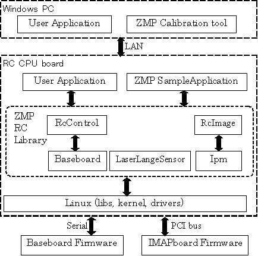

ZMP RoboCar Reference Manual
8. ソフトウェア開発
概要
Linux上のアプリケーションを作成する方法を説明します。
RoboCarにログインして、RoboCar内のテキストエディタ(vi)、 コンパイラ(g++)、デバッガ(gdb)を使用してプログラムの開発が できます。 ライブラリ、インクルードファイルなどもインストール済みです。
また、Linuxシステム(PC)を別途用意していただき、プログラムを開発することも可能です。 その場合は、付属のCDからライブラリ、インクルードファイルを 適当な場所に展開し、必要なパスを設定してお使いください。 コンパイル、リンクまでが可能で、実行バイナリは、RoboCarに転送すると実行できます。
以下、主にRoboCar内での開発を前提に説明しますが、 PC上での開発もディレクトリ構成やアカウント情報以外、 まったく同様です。
ソフトウェア構成
ユーザアプリケーションは、Linuxのひとつのアプリケーションとして 実行されます。 RoboCarのハードウェアにアクセスするには、RoboCarSDKとして提供される 5つの共有ライブラリを必要に応じて使います。
ライブラリは、内部でシリアルポートや、PCIバス、USBポートを各種ドライバ経由で 使用します。
ソフトウェア構成

図: ソフトウェア構成図
ライブラリ
libRcControl.so
Baseboardライブラリを介してRCの速度制御、ステアリング制御、センサ情報取得を行います。

図: RcControlライブラリ クラス構成図
libBaseboard.so
Baseboard(RS232通信)やステアリングサーボ(RS485通信)とのデータ送受信を行います。
図: Baseboardライブラリ クラス構成図
libLaserRangeSensor.so
c_urgライブラリを介してLaserRangeSensorの情報取得を行います。
図: LaserRangeSensorライブラリ クラス構成図
libRcImage.so
IMAPボードを制御し結果を得ます。
図: RcImageライブラリ クラス構成図
libIpm.so
IMAPボードを低レベルの制御を提供するライブラリです。 Plxライブラリを介してIMAPボードとのデータ送受信を行います。
図: Ipmライブラリ クラス構成図
クラス
ここに主だったクラスを紹介します。 詳細はAPIリファレンスを参照してください。
RcControlクラス
RCをコントロールするためにBaseboardクラスへアクセスします。
SerialReceiveHandlerクラス
シリアルデータ受信時のコールバックメソッドを提供します。
Baseboardクラス
駆動速度の設定、ステアリング角度の設定、各種センサ情報取得を行うため RS232CommunicationクラスとRS485Communicationクラスへアクセスします。
RS232Communicationクラス
駆動速度の設定、各種センサ情報取得を行うために、RS232でBaseboardと データの送受信を行います。
RS485Communicationクラス
ステアリング角度の設定、サーボ情報の取得を行うために、RS485でサーボモータと データの送受信を行います。
LeaserRangeSensorクラス
c_urgライブラリを介してレーザレンジセンサの情報取得を行います。
LaserRangeSensorReceiveHandlerクラス
レーザレンジセンサのデータ受信時のコールバックメソッドを提供します。
IpmManagerクラス
Ipmライブラリを介してステレオ視アルゴリズムのコントロールや結果の取得をします。
IpmControlクラス
IMAPCARを制御します。
IpmDeviceクラス
IMAPCARプロセッサやメモリにアクセスするための機能を提供します。
環境
Linux内のファイルシステムで、RoboCarのシステムは以下のような場所に インストールされています。 アプリケーション開発の際にはMakefileに以下のパスを適宜含めてください。
ディレクトリ、ファイル
- ライブラリ
/usr/local/lib/zmp/
- インクルードファイル
/usr/local/include/zmp/
Linuxについて
インストールの元のディストリビューションはFedora10になります。 デスクトップ用のi386をベースとしています。 カーネルは、linux-2.6.26.8 に RT-Preempt パッチ(patch-2.6.26.8-rt13）を当てて、リアルタイム性を確保しています。
インターネットでも情報が公開されているので、参考にしてください。
チュートリアル
RoboCar内で、プログラムの作成から実行まで、簡単に流れを追ってみます。
libRcControlを使用して、ステアリングのサーボをコントロールする 簡単なアプリケーション、my_appを作成することにします。
準備
ログインして、これから作成するプログラムのために、適当な場所にディレクトリを 作成します。
# pwd
/root
# mkdir MyProject
# cd MyProject
ソースファイルの編集
viを使って、ファイルを作成します。ここでは、プログラム名をmain.cppとしておきます。
# vi main.cpp
以下のプログラムの入力し、保存します。
#include "RcControl.h"
#include <unistd.h>
using namespace zmp::zrc;
void init_system()
{
system("ipm_serial S 0x04 0");
usleep(250 * 1000);
system("ipm_serial S 0x04 1");
}
int main()
{
init_system();
RcControl rc;
rc.init();
rc.SetServoEnable(1);
rc.SetSteerAngle(30);
rc.SetServoEnable(0);
}
ビルドと実行
ビルドします。'-I'で、インクルードファイルのパスの指定と、'-L'で、ライブラリパスの指定、 そして、'-l'で、リンクするライブラリを与えます。-oは出力ファイル名です。
# g++ -o my_app main.cpp -I/usr/local/include/zmp -L/usr/local/lib/zmp -lRcControl -lBaseboard -lpthread
my_appが作成されますので、実行してみます。
# ./my_app
ステアリングが指定した角度にうごくと成功です。
プログラムの解説
- ライブラリlibRcControlを使用したいので、"RcControl.h"をインクルードします。 "unistd.h"は、usleep()のためです。
- RoboCarのライブラリ内のクラス等は、全てネームスペースzmp::zrc に属します。 using namespaceは、ネームスペースzmp::zrc を使用するための宣言です。
- initsystem() 関数。ベースボード基板をハードリセットする関数です。 外部実行ファイルipmserialをコールしています。 アプリケーションの最初に必ず呼ぶようにしておくと便利です。
- RcControl rc;でオブジェクトを作成して、init()で初期化します。
- SetServoEnable(1)でサーボを起動します。
- SetSteerAngle(30)で角度を30°に指定します。
- SetServoEnable(0)でサーボをOFFにもどします。
ビルド効率化のためのMakefile
ビルドの際はMakefileを作成すると、コマンドラインからコンパイラを起動するのに比べ 作業効率が上がります。
# vi Makefile
内容は以下になります。
CPP = g++
CPPFLAGS = -g
INCLUDES = -I/usr/local/include/zmp
LIBS = -L/usr/local/lib/zmp -lRcControl -lBaseboard -lpthread
TARGET = my_app
OBJS = main.o
all: $(TARGET)
$(TARGET): $(OBJS)
$(CPP) $(LDFLAGS) -o $@ $(OBJS) $(LIBS)
clean:
rm -rf $(OBJS) $(TARGET)
.cpp.o: $*.h
$(CPP) $(CPPFLAGS) $(INCLUDES) -c $<
makeコマンドでビルドが実行されます。
# make